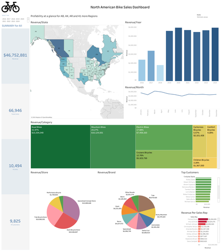

Project 1: Bike Store Sales BI Dashboard
Developed a comprehensive data warehouse to centralize data from various sources, enabling efficient data analysis and reporting for business intelligence.
Developed a comprehensive data warehouse to centralize data from various sources, enabling efficient data analysis and reporting for business intelligence.
Implemented a real-time data processing pipeline using Apache Kafka and Apache Spark to process and analyze streaming data for immediate insights.
Designed and developed a robust data cleansing and transformation framework to ensure data quality and consistency across multiple systems.
Built a scalable big data analytics platform using Hadoop and Hive to store, process, and analyze large datasets for complex queries and reports.